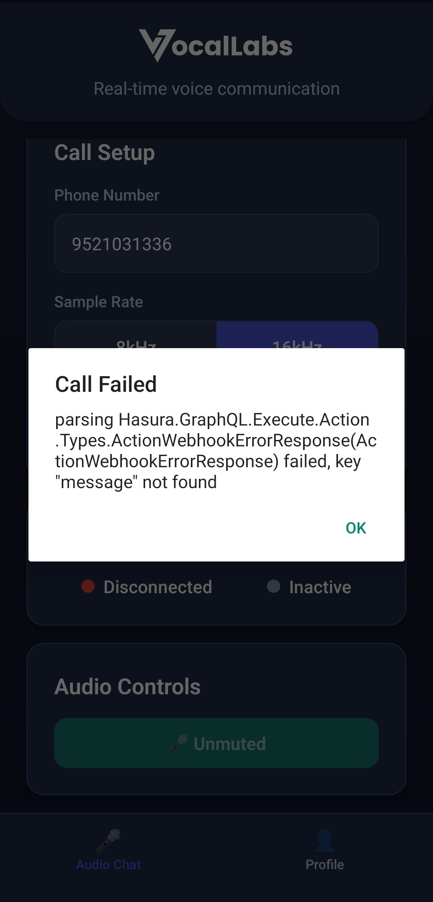
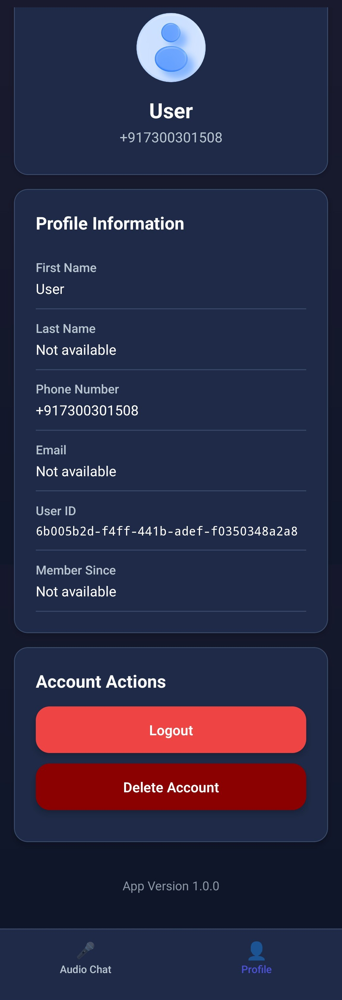
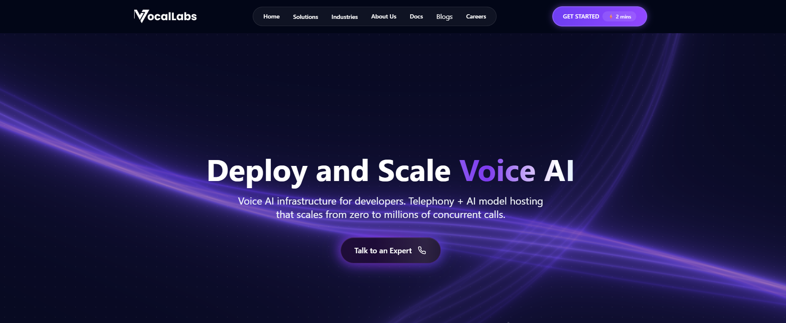
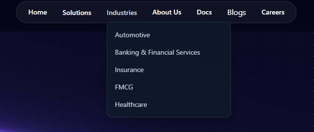
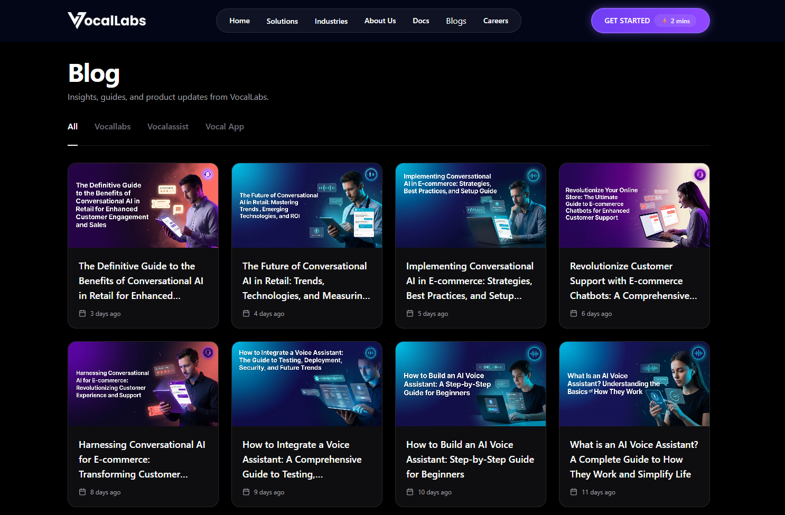
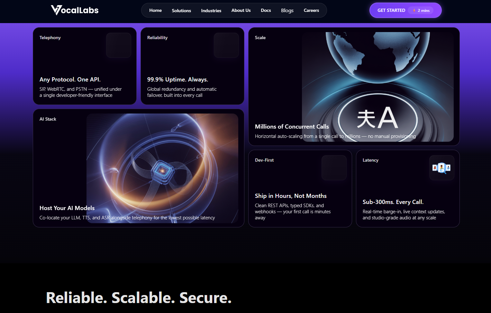
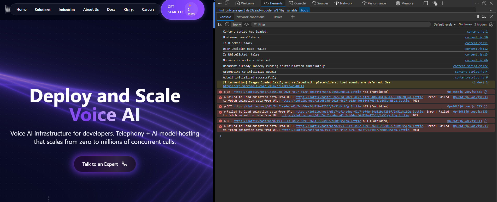

This evaluation reviews the cross-platform ecosystem of Vocallabs.ai, dissecting specific friction points across its production infrastructure, user acquisition channels, and client interfaces. By diagnosing issues through an engineering-informed product lens, this report presents five highly specific, non-obvious interventions designed to protect user retention, stabilize the data flywheel, and optimize enterprise conversion funnels.
Feedback Focus: Interception and Abstraction of Downstream Exceptions
parsing Hasura.GraphQL.Execute.Action.Types.ActionWebhookErrorResponse... failed, key "message" not found.
Feedback Focus: Dynamic Entity Configuration and User Profile Lifecycle
"Not available". The current view entirely lacks any interactive inline input components.
Feedback Focus: Resolution of Cognitive Dissonance in Core Value Propositions


Feedback Focus: Capturing High-Intent SEO Acquisition Traffic

vocallabs.ai/vs/vapi). To eliminate migration friction, ship an open-source "Vapi-to-Vocallabs Compatibility SDK Adapter" letting developers hot-swap their core telephony API endpoints without refactoring business logic.Feedback Focus: Native Integration Architecture for Customer CRM Ecosystems

| Initiative | Product Pillar | Impact | Complexity | Target Timeline |
|---|---|---|---|---|
| Exception Abstraction Layer | UX & Reliability | High | Low | Immediate (Day 1) |
| Onboarding Profile Refactor | Features / Services | High | Medium | Short-Term (Day 30) |
| Split-Funnel Landing Architecture | GTM & ICP Alignment | Medium | Low | Short-Term (Day 30) |
| API Compatibility Wrapper | Competitor Strategy | High | High | Mid-Term (Q3) |
| Native CRM Data Pipelines | Potential Collaborations | Critical | High | Mid-Term (Q3) |
While evaluating the web experience, a console inspection revealed that the primary landing page fails to resolve multiple production UI animations. It triggers explicit GET 403 (Forbidden) network errors from an external host (lottie.host).

Quick Fix: Relying on unauthenticated third-party URLs to deliver core client assets introduces an avoidable point of failure. The engineering team should download the raw .json vector payloads and host them securely on the native content delivery network to ensure the UI layout remains complete even during external network anomalies.